地球青年丨没学上的中国留学生：被迫休学、中转第三国隔离入境
原文链接 备份链接 以下文章来源于地球青年图鉴 ，作者地青 在持续蔓延的新冠肺炎疫情之下，中国留学生们的求学路相比往常，困难重重。有人为了按时返校，正在尝试辗转第三国避开入境禁令，也有人只好被迫休学。与之而来的，还有高昂学费的压力，房租 …

凤凰新闻客户端 凤凰网在人间工作室出品
打开凤凰新闻客户端，搜索「在人间」并关注
电影《肖申克的救赎》有句台词：“不要忘了，这个世界穿透一切高墙的东西，他就在我们内心深处，那就是希望”。
枞阳县，地处安徽省中南部，长江在小县城的南边缓缓流过。我在这座总人口81万、距离武汉380公里的小县城成长、生活，现在是本地的一名基层工作人员，同时也是一位摄影爱好者。庚子年春节，大年三十，枞阳县首次出现两例疑似病患，次日确诊。武汉的新冠肺炎疫情由远及近，阴霾天，淅淅沥沥的小雨携裹着一丝紧张和恐惧，静静地在江北的这座小城蔓延开来。在这等候春天的日子里，我用镜头记录被疫情笼罩的小城。

■ 1月29日，安徽省枞阳县白柳镇，桂元村老党员杨胜年正在赶写“疫情防控劝返点”宣传牌。宣传牌写到，“各位：大家新年好！今年情况特殊，外地亲友不要入组，本组民众也不要外出串门！敬请大家谅解！”
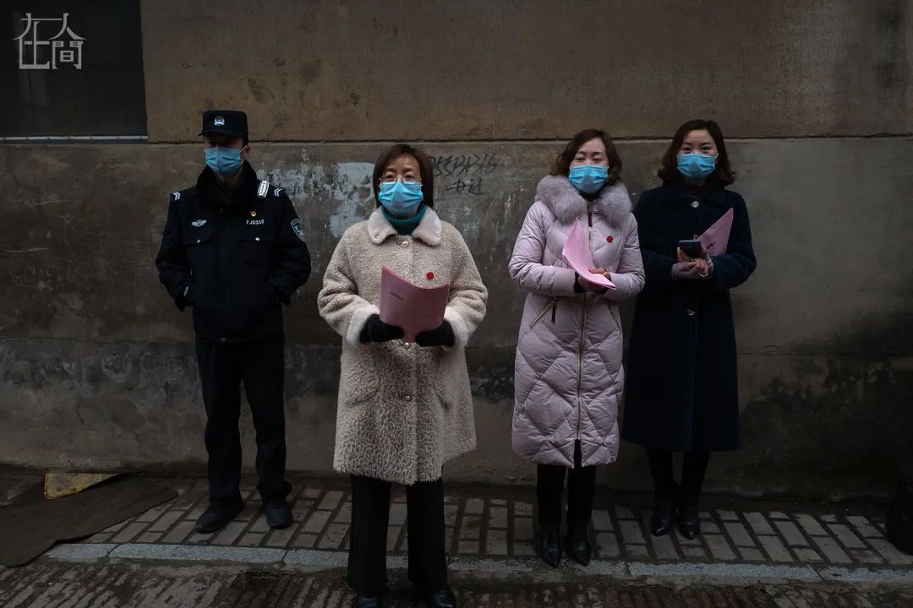
■ 1月28日，安徽省枞阳县枞阳镇胜利社区，队书记江凌正带领社区小分队走街串巷、宣传疫情防控知识。

■ 1月26日，安徽省枞阳县，村医何宗涛正在为从湖北返乡过年的陆某测量体温。
陆某1月13日从武汉乘车回家，尚未出现发烧发热体征，按照防控要求，村医何宗涛每天到她家中进行体温检测。在陆某家中，客厅的麻将桌上散落的麻将，一家人居家隔离时用这来打发时间。
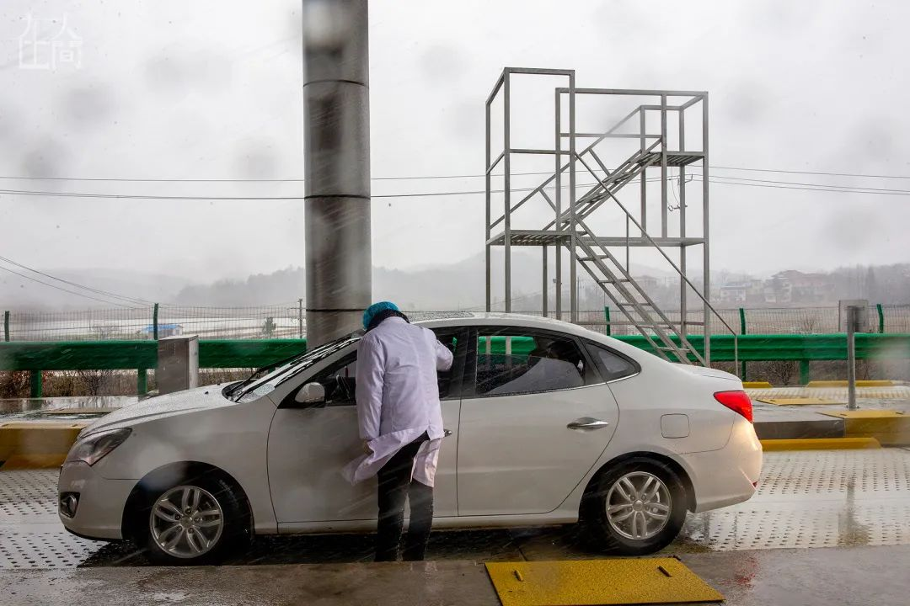
■ 1月26日，安徽省枞阳县高速公路出入口，医务防疫人员对所有进入县域的人员进行体温检查。
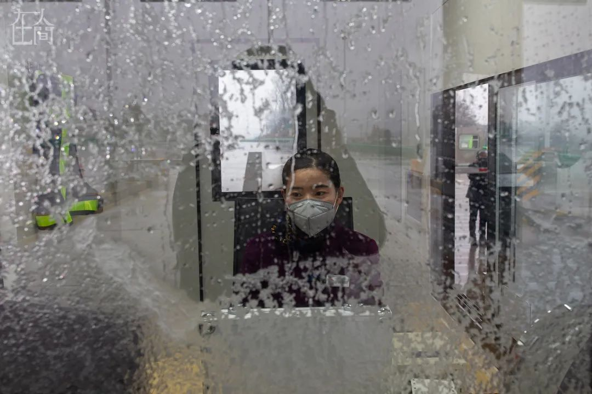
■ 1月26日，安徽省枞阳东高速公路收费站，工作人员佩戴口罩坚守岗位。
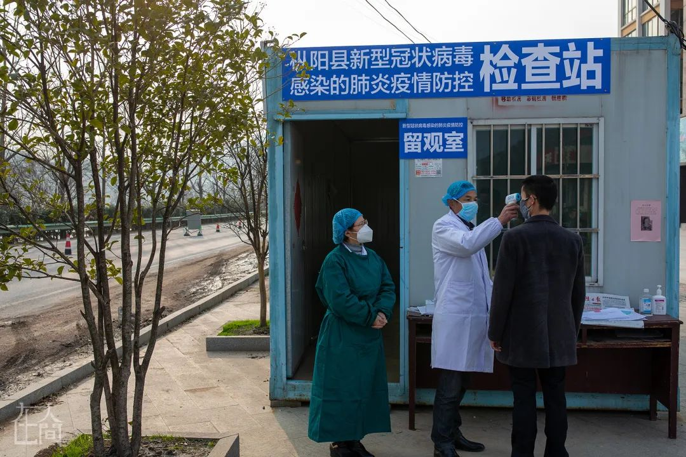
■ 1月29日，安徽省枞阳县小缸窑县界出入口，两名医护防疫人员在县域边界测量外来人员体温。

■ 1月26日，安徽省枞阳县，群众在药店排队购买口罩、酒精等个人防护用品。
其实，我在拍摄中，心中还是会有一些担心，在微信群看到药房口罩到货的信息，我再次去往药房购买口罩和消毒药水，营业员看了一眼长长的队伍，告诉我，口罩限购每人可以购买十个，到我应该没有了，口罩已然成为了最热销的年货。

■ 1月30日，安徽省枞阳县发热病人留观点，县医疗救治预备队的护士宣誓请战。
1月26日晚间，县委县政府紧急征用县社会儿童福利院，作为枞阳县备用医疗机构。100名工人日夜施工，仅用3天时间将福利院改造成了可容纳48张床位的发热病人留观点。枞阳版“小汤山医院”于1月31日正式启用，来自全县的59名医生和92名护士进驻留观点。
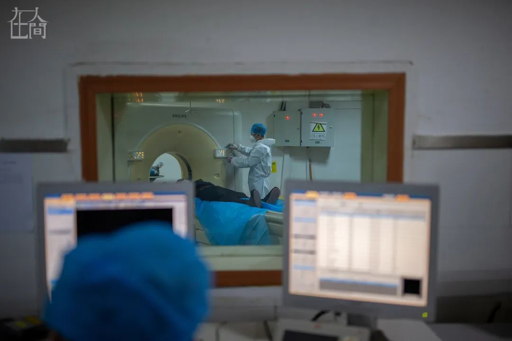
■ 1月30日，安徽省枞阳县医院放射影像科，主治医生陈鑫为发热病人进行胸部 CT检查。

■ 2月1日，安徽省枞阳县枞阳镇。山水云间小区开始实行封闭管理，所有小区只保留一个出口，每个出入口至少安排2名劝导员。
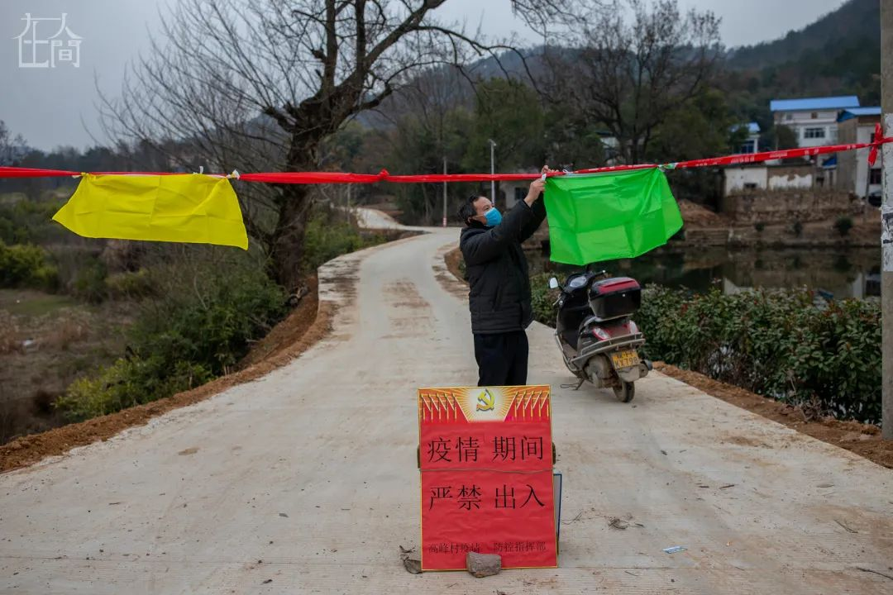
■ 2月2日，安徽省枞阳县雨坛镇。高峰村劝导员曹安明在整理路障。

■ 2月4日，安徽省枞阳东高速公路出入口。藕山镇卫生院值守医生胡政对外来人员测量体温。
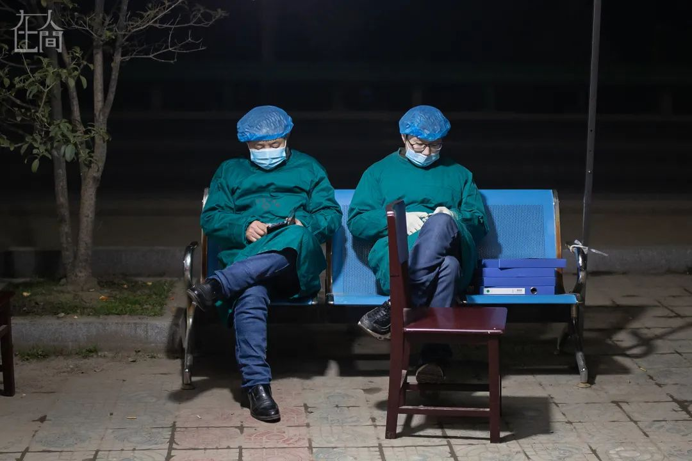
■ 2月4日，安徽省枞阳县小缸窑，2名医护防疫人员换班后坐在卡点等车返家时小憩。
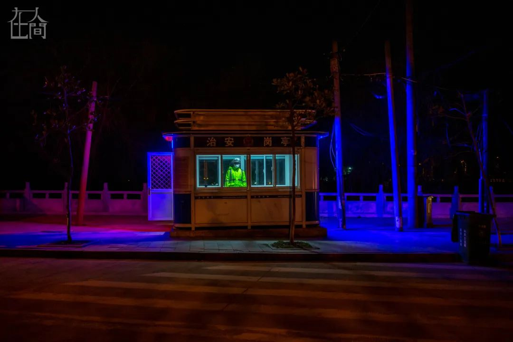
■ 2月19日，枞阳县枞阳镇，夜间值守的交通干警。值班交警需对进城车辆登记基本信息、记录体温，并询问旅行和接触史。交警、运管人员每天4人分2班，每班12小时。
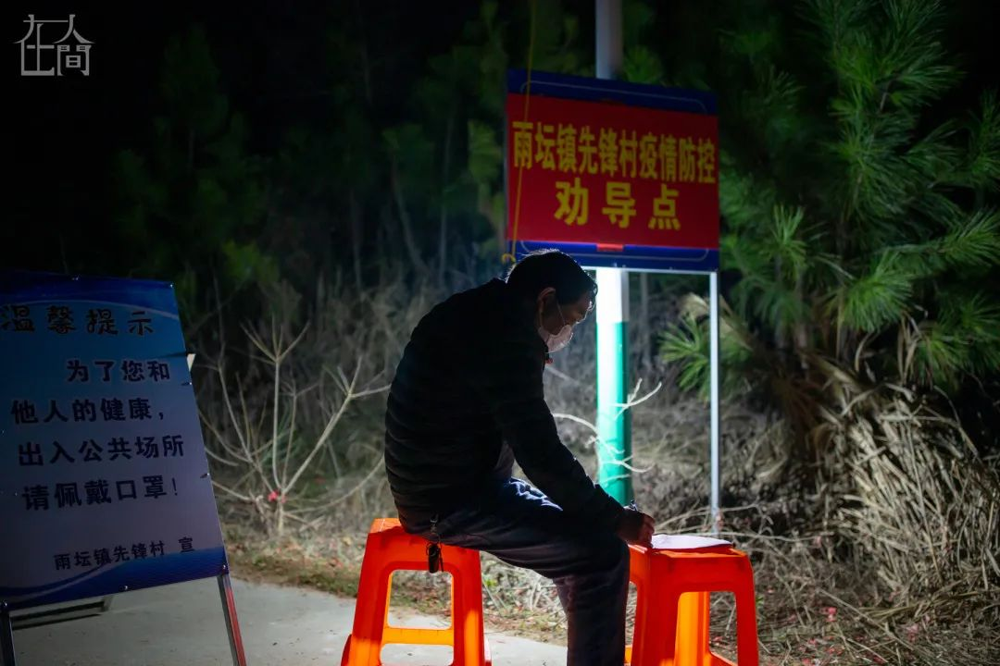
■ 2月4日，安徽省雨坛镇先锋村。村干部荣辉胜在夜班卡点值守，同时电话再次摸排外出回乡人员信息。

■ 2月3日，白柳镇某户门前立了一个小牌子：该户是湖北（武汉）返乡人员，现是居家医学观察对象，请勿相互走动，谢谢配合！

■ 2月3日，安徽省枞阳县白柳镇。28岁的祖某在铜陵市人民医院经过一段时间治疗，两次核酸检测为阴性，符合出院标准，成为枞阳县首位治愈出院的新型冠状病毒感染的肺炎患者。
当祖某被急救中心的车子送回村口时，村民们都不敢接近她。祖某似乎也没有痊愈后的喜悦，家人在为她准备隔离房间时，她独自站在院子里哭泣，显得孤独而无助。
就在这时，不远处的二楼传来了一声呼喊：“我想你了！” 这是祖某的小学同学。祖某破涕而笑，回了一句：“我也想你了！”
这是那天的整个拍摄中，我印象最深的一件事。我觉得祖某身上有一种孤独，可能很多患者包括已治愈的患者都有的孤独，不但需要面对病毒的威胁，还要面对感染家人、朋友的担忧和自责。

■ 2月3日，安徽省枞阳县白柳镇，2名劝返人员在卡点值班。
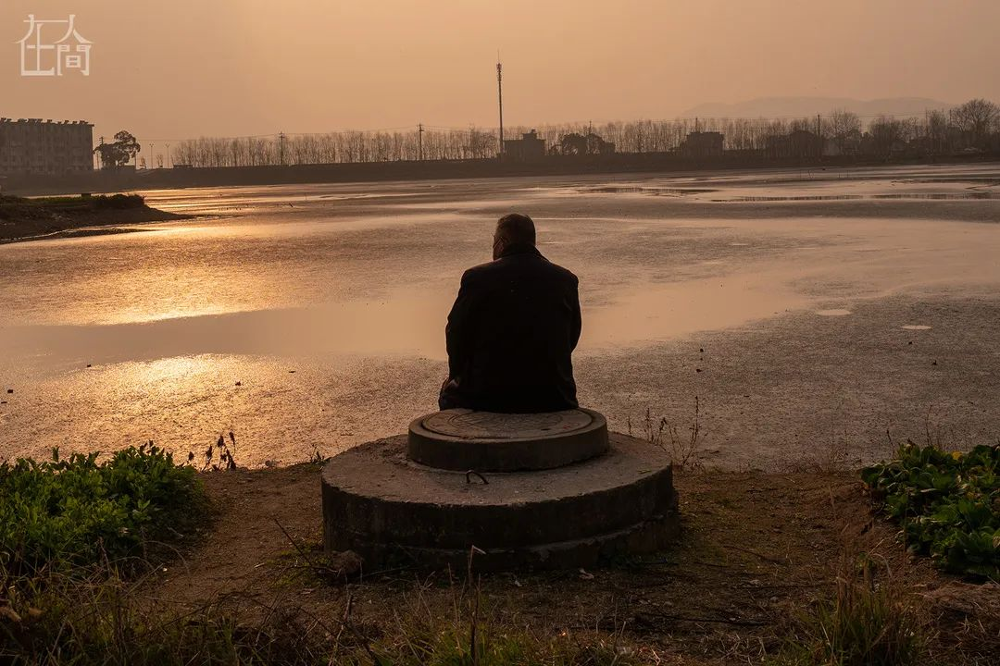
■ 2月4日，安徽省枞阳县枞阳镇，一名戴着口罩老人坐在湖边。

■ 村里广播正在播放老许的抗疫广播。老许，全名许光昶，是电视台的老播音员了，他在家录好音频，许多村里下载后在村里播放。（向下滑动文字查看广播内容）
喂……喂，
各家各户都听着了啊，
我是老许哟。
现在大家在家里时间待长了，
可能都有点不同程度的在家忧郁症的症状了，
就像妇女产后忧郁症一样。
现在的问题啊，
是要多做家务事情，少说话。
说的话喷出来的可能都是火，
不要闹一个家庭矛盾出来啊，
有点麻烦。
实在是有点家庭矛盾呢，
也没有关系，
现在没有事把过去的老照片翻出来看看，
回味一下，找一找过去恩爱的感觉，
回忆一下对子女培养的过程、辛劳。
人生难得有空，回头看看也不错嘞。
另外呢，借这个机会呀，
把家里卫生彻底打扫一下子，
消消毒、通通风，
把家具换换位置，找一点新鲜感。
诶，这里我要强调一点啊，
喜欢藏私房钱的老公要注意了，
在打扫卫生之前，
一定要收好你的私房钱，
别一下子床兜里（床底下）
冒出一捆钱出来子，
那就难为人了，
又冒出一个矛盾出来子，
又不和谐了。
男人藏私房钱，
也不是什么大问题，
主要是老婆管得严子，
主动地承认错误嘛。
说不定老婆呢会握住你的手说：
“哎呀，感谢你老公啊，还有私房钱呢？
这下子有钱买菜了，哎呀，谢谢你谢谢你哟。”
哎呀，老公说：
“落个说（谁说）男人藏私房钱有啥不好呢，
那是男人站得高看得远，
这叫什么呢？
这叫人无远虑，必有近忧。”
好了，开个玩笑啊，
怕你们闷坏喽。
请大家还要坚持一段时间，
不要出门哈。
好了好了，
洗洗困了啊，
不能再讲了。
喂……喂喂喂，
各家各户都听着了啊，
我是老许。
这几天呢，
大家待在家里很郁闷、焦虑、心情暴躁，
我们都很理解。
在你们玩手机的时候，
在你们看电视的时候，
在你们吃饭喝酒的时候，
要想一想在防疫一线工作的
医务工作者、各级干部、警察等等。
他们也是人叻，
他们也有父母、妻子、儿女。
他们冒着被感染的风险坚持工作，
为了什么呢？
想想他们吧。
再过十天、二十天，
我们的防控形势一定会好转起来。
坚持！再坚持！
一定会取得胜利的！
谢谢大家的配合。
你们不出门，
就是为社会做贡献。

■ 1月29日，长江枞阳段。一群冬泳爱好者在横渡长江。
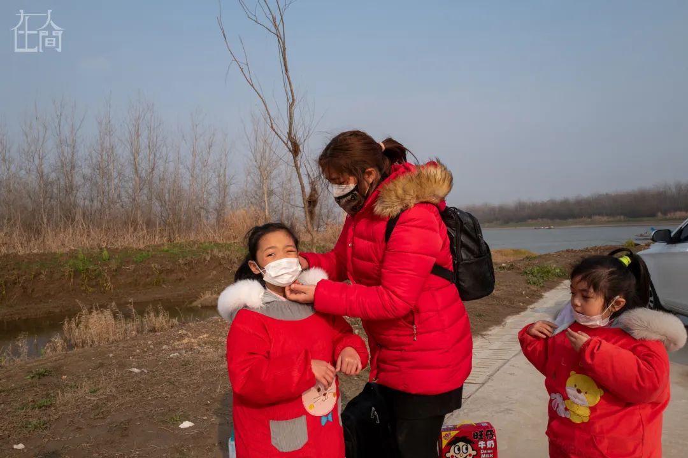
■ 1月29日，铁铜乡和平渡口。一名母亲整理孩子的口罩。
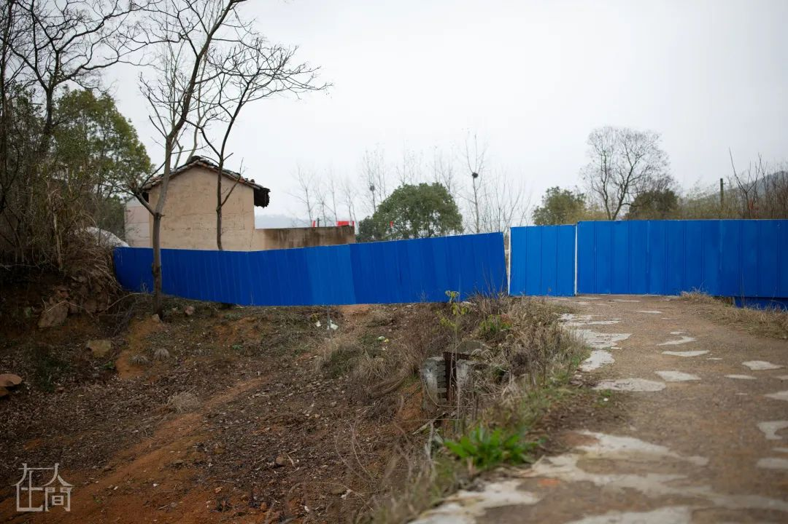
■ 2月12日，安徽省雨坛镇先锋村。被封闭的村道。村里确诊两例后，全村只留一个出口。
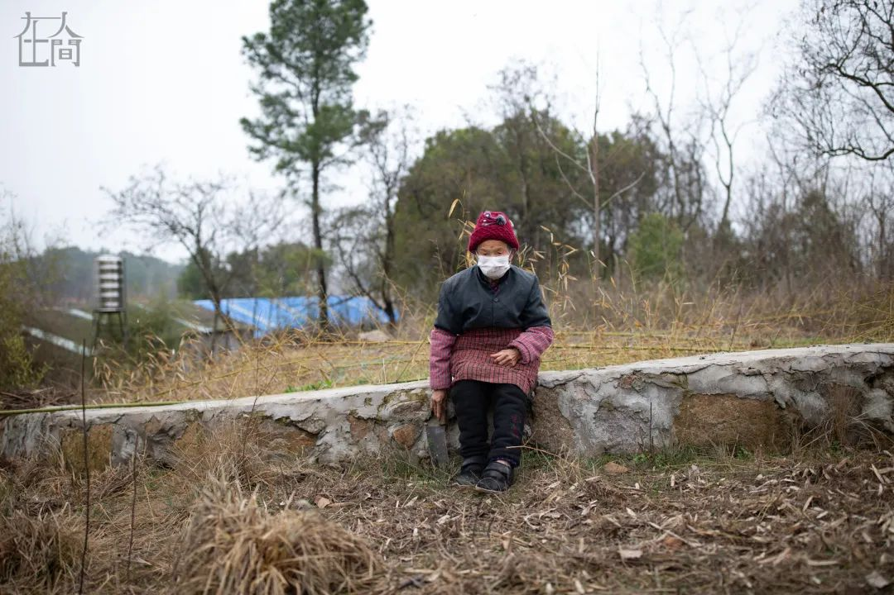
■ 2月12日，安徽省雨坛镇先锋村。王兰英坐在自己院子里。
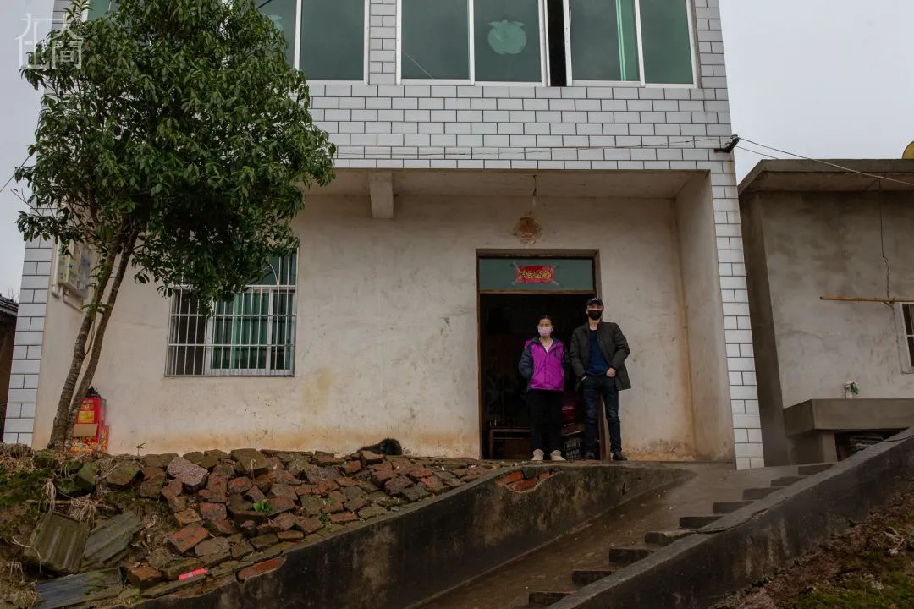
■ 2月14日，铁铜乡新丰村，治愈出院后隔离在家的新型肺炎患者严某夫妇。
在铁铜乡全乡有129个湖北返乡人员，新丰村占了52个，而且全乡2例确诊病例都在新丰村，村里的防疫压力很大。村委会副主任何亮带我们去疫点的时候，我们发现新丰村不像其他地方，整个村内，家家大门紧闭，连一只鸡、一条狗都没有看见。
在确诊病例严某家，何亮喊了几声，台阶上的大门打开了，严某夫妇戴着口罩站在门前，还没等我们说话，就招呼我们不要离得太近，说他们刚出院，还要在家隔离一段日子。严某夫妇常年在武汉打工，一个做木工，一个做保洁员，年前才回家。严某先发病，丈夫随后几日就诊，这在当时的铁铜乡引起了不小的轰动，原先大家以为新冠肺炎只是电视里的病，没想到一下子就近在咫尺了。也就是那时起，不用村里的广播再呼喊，全村人都自觉地戴上了口罩，也不外出串门了。
因为病情发现较早，所以在入院一个多星期后严某夫妇就相继治愈出院。“每天医护人员都给我们测体温、取样化验，心里很害怕，不知道能不能治得好，直到有一天，医生说三次检测结果都是阴性的，可以出院了，跟做梦一样，很想感谢他们，但是当时大脑一片空白，都不知道该说些什么才好。”严某说，因为从住院那天起，医生们就穿着防护服，一直到出院，也不知道那些照顾自己的人长什么样，就算以后回去，也不知道该谢谢谁。

■ 2月12日，安徽省枞阳县雨坛镇。在武汉从事花卉养殖工作的张伦进夫妇在自家院子里。夫妇俩腊月十八从武汉回村过年，“明年不去武汉了，准备隔离期结束后，去南京打工了。”

■ 2月12日，安徽省枞阳县雨坛镇。一直在家务工齐克文在封村后，村里交给他一个任务，就是每天给村里消毒。

■ 2月12日，安徽省枞阳县雨坛镇。在上海从事装潢业务的张启宝一家在自家院子里透气，由于本村确诊一例新冠肺炎患者，全家在家隔离至今。
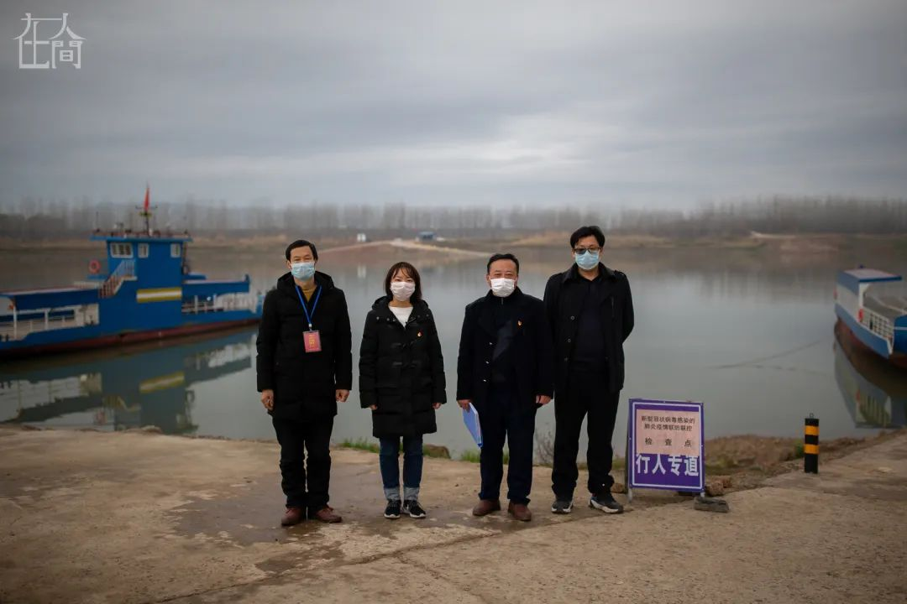
■ 2月14日，铁铜乡和平渡口。孙晴岚和同事。
孙晴岚是乡政府的一名会计，此次抗疫，铁铜乡全部公职人员都参与防疫工作，孙晴岚和同事张斯文、刘二青、杨当付被分配到渡运管理组，从正月初三起，他们每天从早到晚守在渡口边，检查登记所有外出采购生活物资和药品的人员，劝返其他想出洲的居民。孙晴岚的丈夫在安庆市基层派出所工作，也需要参与到抗疫工作中，两人将只有1岁多的孩子交给外婆照顾，中间只回过一次家拿换洗衣服。

■ 2月14日，铁铜乡环卫工人方晓满和吴宗宝坚持在岗位上工作。
铁铜乡坐落在长江泥沙冲击而成的江心洲，往年过了初五六，洲上的人就走的差不多了。今年封洲，大家都出不去，生活垃圾数量成倍增加，每天都要处理十几吨垃圾，其中还有15个专门收集废旧口罩的垃圾桶，需要单独消毒处理，方晓满和吴宗宝一趟趟把垃圾运回回收站，压缩、消毒、装袋，两天一次送往县城垃圾填埋场。

■ 2020年2月14日，安徽省枞阳县和平渡口，商行老板周真涛夫妇送货到渡口。
周真涛是县城新园商行的老板，平时主要给各个乡镇的超市和小商店送货，每天至少一趟，自从疫情爆发以来，近一个月的时间，他只出门送了4趟货。今天，他带来了16箱面包、饼干等小商品，准备送往洲上，因为封洲的关系，他上不了船，洲上的小卖部老板也过不来，只能将货物放在物资运输船上带过去。
“现在这时候，还是不接触的好，做好防护，既是为自己好，也是为大家好。”周真涛边说边将一页记账单折好塞进了纸箱缝里。将货物搬上船就立刻回了岸上，船没有多做停留又立马回航驶回洲上。

■ 2月14日，一辆载满蔬菜的货车从身边经过，驶上已经熄火的渡船。
洲上的蔬菜种植大户兼货车老板余永斌要把这一整车的菜运往县城，供应给菜市场和超市。铁铜乡是枞阳县城的“菜篮子”，每年春节期间每天都要送近10吨的蔬菜进城，如今封洲后，蔬菜供应量骤减到不足从前的三分之一。虽然疫情期间，有的地方提高了的蔬菜价格，但余永斌依然按照以往的价格批发给市场。但是他心里最焦虑的是找不到帮工，很多菜要烂在地里。

■ 2月14日，往铁铜乡腹地行驶的路上，视线所及之处，土地平坦辽阔。一位老人在田间劳作，乌黑的泥土在他银亮的锄头下变得更加蓬松柔软。老人并没有戴口罩，他环顾四周说，没有人啊，没事的吧。老人说，在家里躺了半个多月了，着急！再不出来扒扒地，到了3月份玉米就不能下地了……
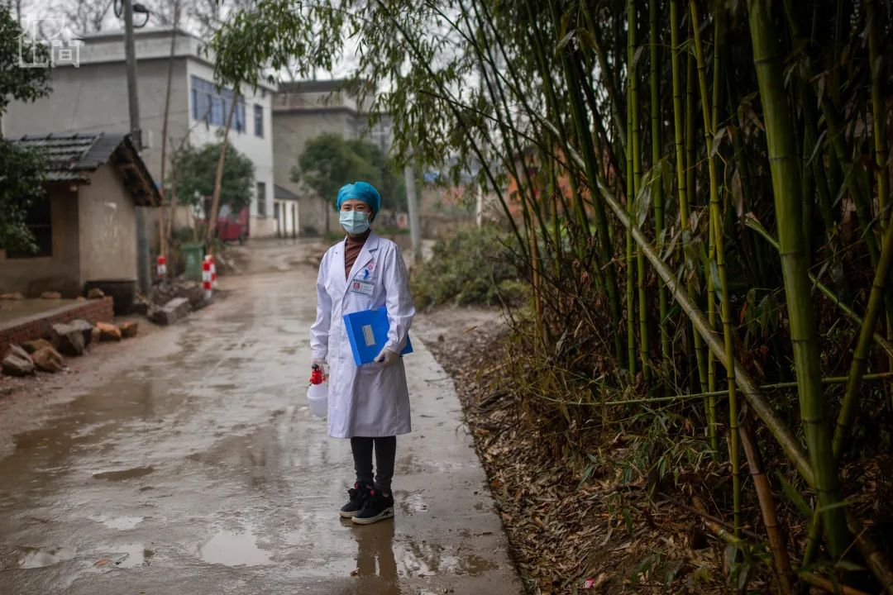
■ 2月14日，铁铜乡庆丰村王凤明。
王凤明是庆丰村的村医，也是两个孩子的母亲，孩子大的上6年级，小的才3岁。在村里碰到王凤明的时候，她一手拿着健康档案，一手拿着消毒喷雾，正要去湖北返乡人员姚成立家做今天的第二次随访。

■ 2月14日，王凤明在姚成立家为两人做体温检测。
庆丰村说大不大，说小不小，村里一共有45个湖北返乡人员，每天两次体温检测，全由她一人完成，从这家到那户，做完一轮，半天也就结束了，中午在卫生室随便吃点泡面，下午，又要开始了新一轮的检测。
大年三十下午5点多，原本应该和家人一起准备年夜饭的她还在村里给湖北返乡人员量体温，等到做完检查消完毒匆匆忙忙赶回家，天已经完全黑了，丈夫家的老太太责怪她不为孩子考虑。

■ 2月29日，安徽启动线上教育教学前夕，枞阳县雨坛镇雨坛村特困户学生汪茹鑫正在线学习。当天，由于其家中网络出现故障，影响网上学习。县电信公安排技术人员及时对她家网络故障进行了维修排除。

■ 2月14日，铁铜乡的卫生院门诊大厅里竖着一顶帐篷，顶上贴着“发热门诊”四个大字，全副武装的医护人员坐在帐篷里，护目镜上全是雾气，分不清是男是女。
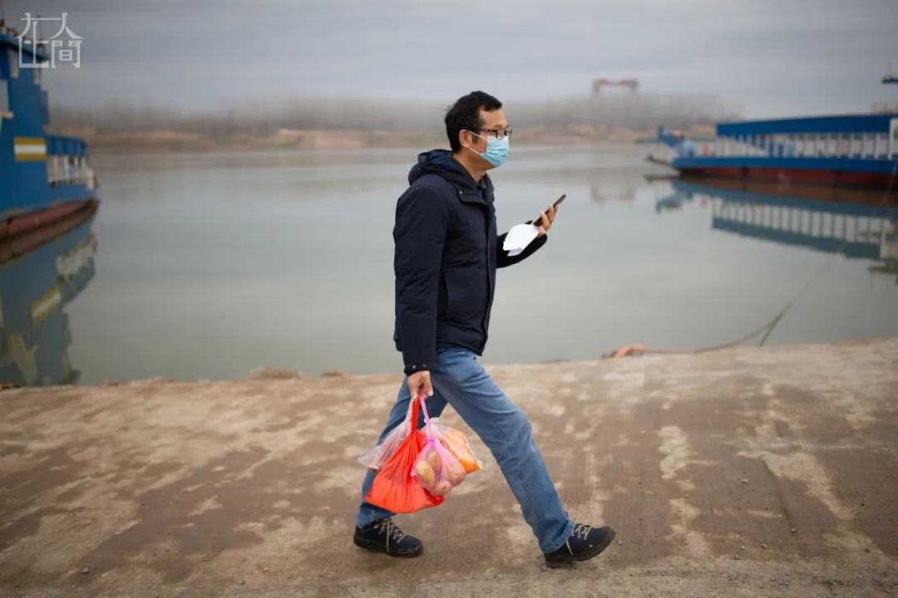
■ 2月14日，铁铜乡的何宗悦早早等候在岸边。
何宗悦年前才回家探望89岁的老母亲，原本打算在家住几天就飞美国和妻儿一起团聚，结果突如其来的疫情打乱了他所有的计划，出洲都成了问题，更不用提出国了。
何宗悦老母亲患有老年痴呆症，需要长期服用处方药，已经断药两天了，好在乡政府每天都派人挨家挨户登记所需生活物品和药品，再由专人去采购，得知今天的船带回来了母亲的处方药，他就在村里开了通行证，等拿到药后，忙不迭一边往家赶。一边说，是天留人，让他能在母亲膝前多尽些孝心。

■ 2月14日，安徽省枞阳县和平渡口。
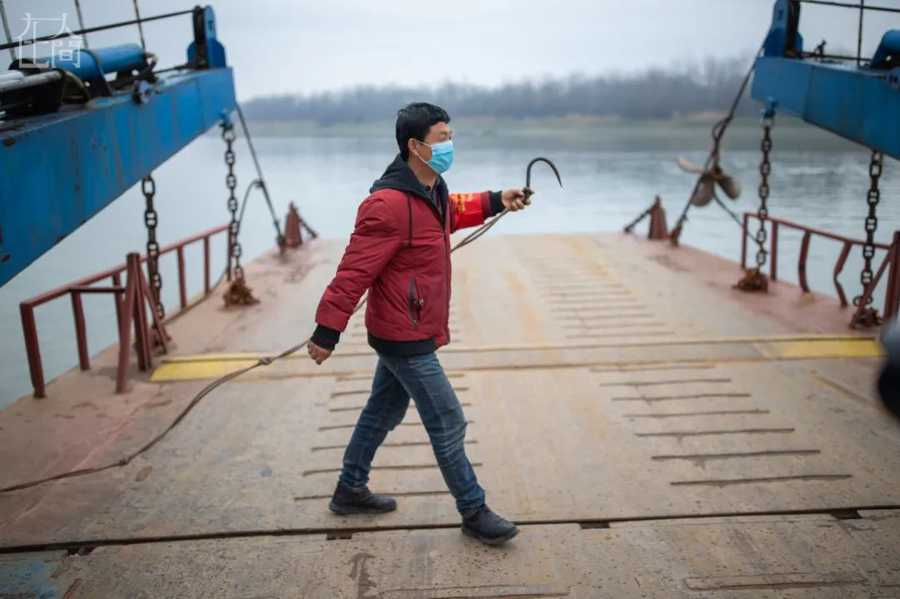
■ 2月14日，安徽省枞阳县和平渡口，船老板在开往铁铜乡的渡船头上挂上安全绳。
今年49岁的陈启胜已经在这个渡口摆渡了16年，往年的春节，他的渡船每天都要来回跑六七十趟，一天可以载六七千人过江，今年封洲停渡，其他船只全部停航，他的船被乡政府定为应急船和物资运输船，严格按照政府调配行驶，每天最多跑五六趟。春节本来是一年当中生意最好的时候，尽管因为这场疫情损失了十几万，但陈启胜说：“大是大非，我还是分得清的，政府这是在帮我们，我们都要配合的。”
■ 2月14日，枞阳县连续1天无新增新冠感染病例，累计确诊病例22例，累计出院7例。
江边，已难寻见往日的热闹。江风凛冽，飞鸟从空中掠过，江面一艘孤单单的大货船渐行渐远。天空低沉，乌云翻滚，天地之间只剩下了江水流动的声音。2020年春节，一场突如其来的疫情让这里改变了模样。
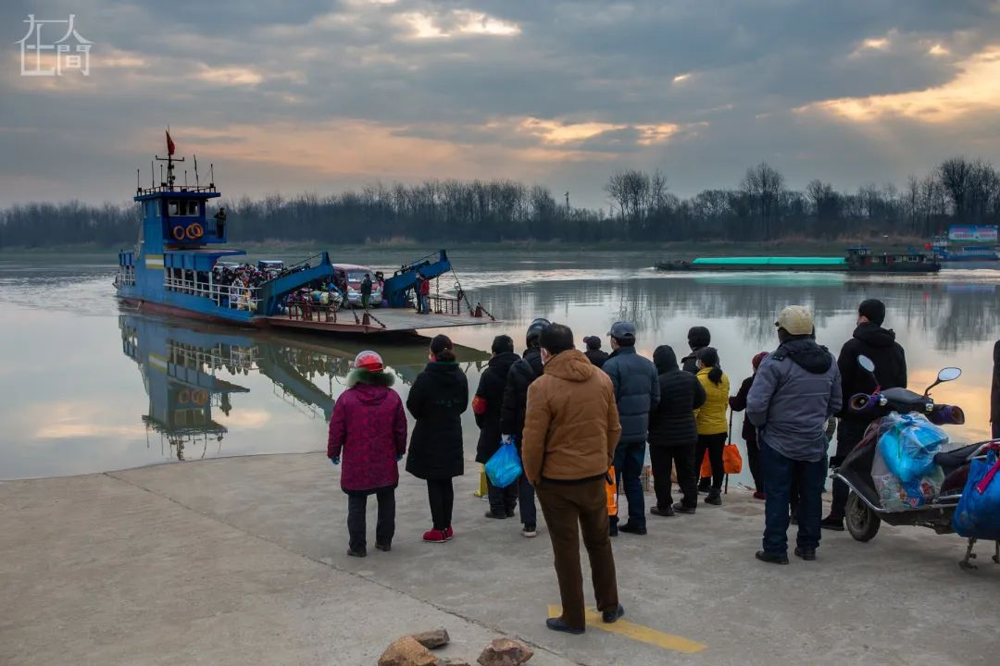
■ 2月21日，安徽省枞阳县和平渡口。鉴于疫情防控期间群众外出务工等现实需要，县防疫指挥部于2月14日出台外出人员离县手续办理流程，大量无湖北（武汉）接触史、居家隔离时间满14天的及经检查无发热、咳嗽、气促等新冠肺炎症状的人员外出返工。

■ 2月21日，安徽省枞阳县和平渡口，周华拖着行李走上渡口去往合肥复工。周华在拿到复工证明后，由本人申请填报枞阳县外出人员离县申请表，再确认近一个月以来无湖北（武汉）旅居史或与湖北（武汉）来枞、返乡人员接触史。由村卫生室进行身体检查后确认无发热、咳嗽等症状后签字盖章，报村委会签注意见方可出洲返工。

■ 2月21日，安徽省枞阳县和平渡口。在宁波从事服装机械设备生意的张东洋，腊月23日携妻小回妻子老家铁铜新丰村过年，封洲后一直滞留在铁铜。2月20日办理完离枞人员申请手续后，于今日和岳父一起回宁波复工，他的妻子和孩子留在老家，等疫情形势稳定后再去汇合。

■ 2月21日，安徽省枞阳县和平渡口，一名来接女朋友的男子在等渡船。
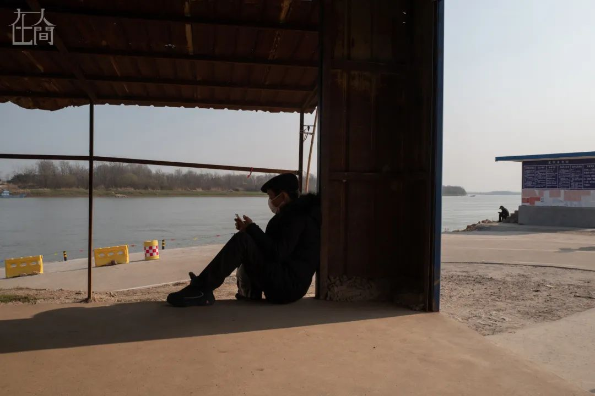
■ 2月23日，枞阳县连续天10无新增。县指九号通告，撤销本县范围内国省干线、高速公路出口检疫点，拆除县乡村道路“硬隔离”，取消企业和项目复工复产审批备案，全面组织复工复产。

■ 3月2日，为统筹复工复产和疫期防控期间群众婚姻登记办理的需求，枞阳县恢复婚姻登记业务。许杨兵和杨凤，在江苏常熟服装厂打工，平日也没时间，年前两人就计划好春节回老家领证的，因为疫情给搁置了。今天，两人终于在县里民政局恢复婚姻登记的第一天领证结婚，他们计划再过几日就回江苏上班了。

■ 二月初二 ，龙抬头。枞阳镇双龙村，在城里开理发店的张文艺回村里为老人和孩子义务理发。
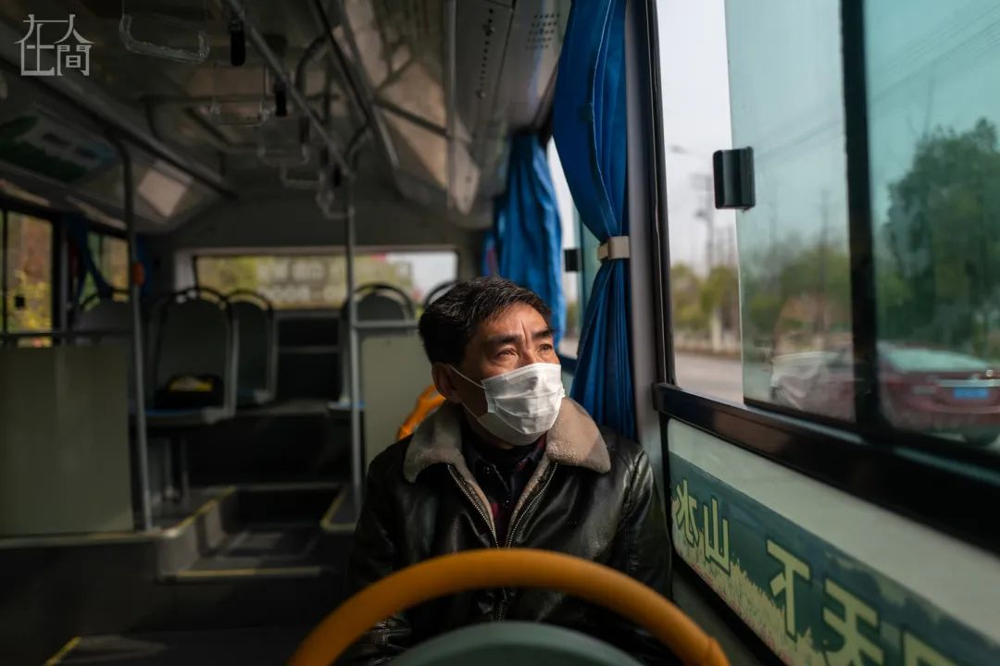
■ 2月24日，枞阳县恢复了县城区部分公交线路运营和县域内出租车客运，公交车上人不多。
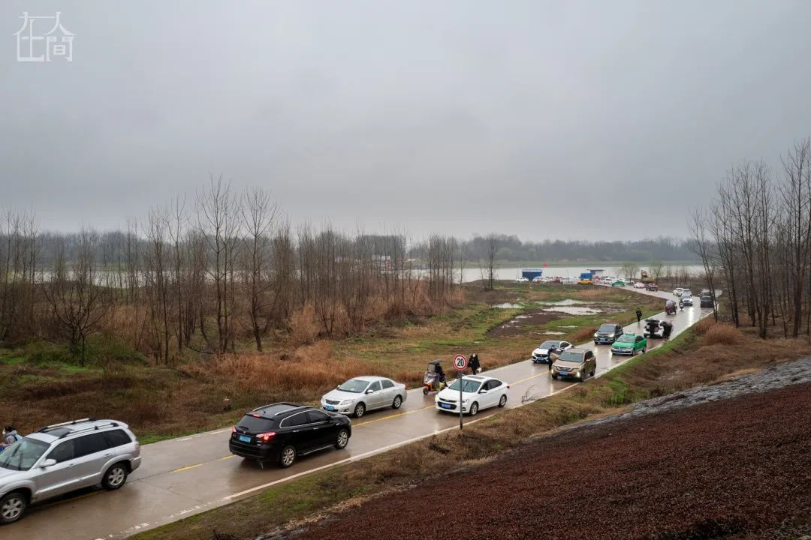
■ 2月26日，长江枞阳段。实行分级有序恢复渡船政策实施后渡口过往车辆比往日增加了不少。

■ 2月24日，枞阳镇双龙村。值班的卡口工作人员。

■ 2月24日，长江枞阳段。江边钓鱼的人们。
这个冬天，江上的寒流刺骨，但江流依旧辽阔，日夜奔腾。人间的那些哀愁与欢欣，悲凉与温情，在江边一日又一日上演，不曾落幕。已经立春的日子，天开始回暖。
我始终记得2月3日，枞阳首位治愈出院的新冠肺炎患者，她在回村的路上人们还是不敢接近她。但愿这份恐惧有更多对生命的尊重，但愿这份恐惧警醒着人们对自然的敬畏，如同加缪在《鼠疫》中说过的：“人类能在这场鼠疫和生活的赌博中，赢得的全部东西，就是知识和记忆!”
更多疫情故事，请点击左下角「阅读原文」。
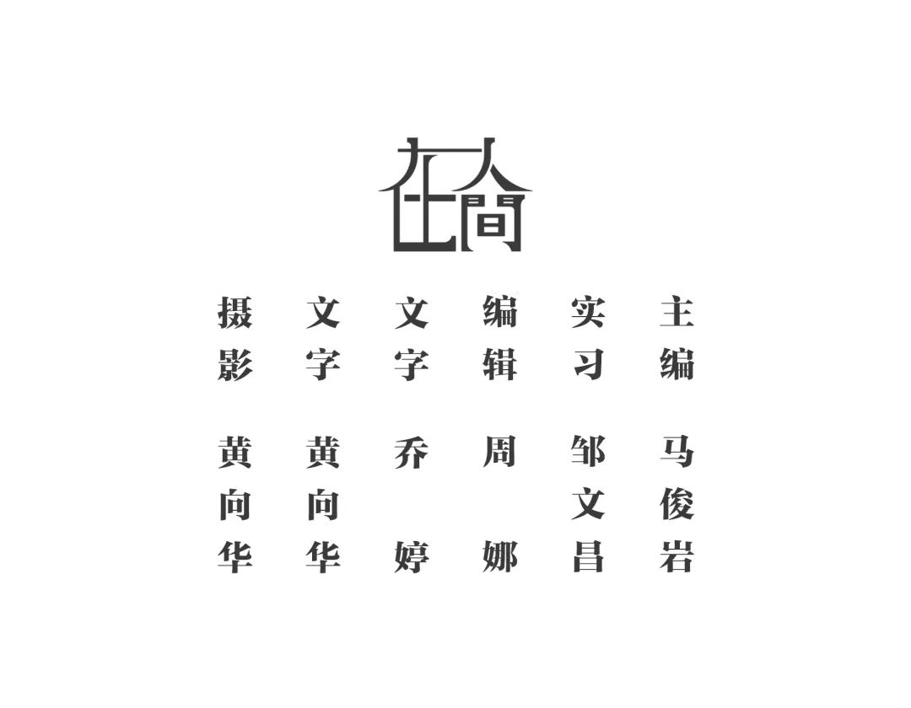


新型肺炎疫情牵动人心，
《在人间》现面向全国网友征稿：
（一） 疫区影像日记
如果你身处疫区
请你用照片（视频）和文字记录
你所听闻和见到的一切
照片不少于3张
文字不少于300字
投稿方式：微信联系人间君（zairenjianliving）
（二）抗击疫情真实故事
无论你是一线医护人员、志愿者、
确诊或疑似患者及家属、已治愈出院人士等等，
如果希望讲述疫情相关经历，
请微信联系人间君（zairenjianliving）

文章已于修改
原文链接 备份链接 以下文章来源于地球青年图鉴 ，作者地青 在持续蔓延的新冠肺炎疫情之下，中国留学生们的求学路相比往常，困难重重。有人为了按时返校，正在尝试辗转第三国避开入境禁令，也有人只好被迫休学。与之而来的，还有高昂学费的压力，房租 …
原文链接 备份链接 应该做一个自私的人，还是坚持自己：做一个对社会有用的人？ 口述 | 高 集 整理 | 沈 林 今天是我自愿隔离在家的第14天，按理说，我已经可以正常出门了。但是最近发生的事，让我的心情很复杂。 我叫高集，20多岁的时 …
原文链接 备份链接 从一开始，余昌平就想过自己可能会被感染。他是武汉大学人民医院呼吸与危重症医学科的医生，疫情发生后，他成为医院冠状病毒防治专家组的成员。 专家组成员被感染？听起来有点严重。余昌平觉得很正常：“接触那么多病人，总是会感染 …
原文链接 备份链接 岛语 非常时期，武汉成了全国人民挂念、祈福的城市。封城后，武汉人民的真实生活是什么样？ 武汉在发生哪些变化？ 正和岛自1月26日起特别推出“叶青专栏”。叶青是一位定居武汉40年的市民，也是一名学者和官员。在过往多期的专 …
原文链接 备份链接 “安全套大卖”不只是一个玩笑，还有哪些意想不到的逆势上扬？ 文 |《财经》记者 杨立赟 编辑 | 余乐 今年2月14日，你收到玫瑰花了吗？ 各地对疫情严防死守，女士们在办公室收到一束玫瑰、接受同事们注目礼的戏码，不太 …